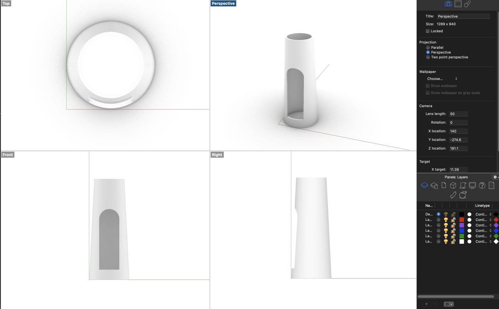

A5: Getting Meshy! and Lamps!
Part 1: Modify the mesh of two STLs to produce a single printable STL.
This cute little polar bear named Kumaty was created by katman29. He made a whole collection of
polar bears and shared them on Thingiverse (polar bears).
I selected this polar bear because it is the original one, and easier for me to add accessories.
 Image source
Image source
I then went to find some cute accessories for Kumaty. The winter is coming, so I decided to choose a Santa hat
for Kumaty, which I found it on Thingiverse too. I hope Kumaty will like it!
Image source
The following picture is KUMATY in Rhino. The original file is a closed mesh, so I don’t need to reduce the
mesh.
I then imported the Santa hat into Rhino. It is also a closed mesh. However, as the picture shows, the hat size is too
large to fit Kumaty's head, so I scaled it down to 0.3 of the original size.


Then I used the command “QuadRemesh” to convert them to become the closed SubD type. And I used "booleanUnion"
to create a closed solid polysurface polar bear with a Santa hat!


Part 2: Getting started with lamps
I got plenty of ideas for designing my lamp, so I need to narrow it down first by setting some restrictions on it.
First, I choose to design a table lamp rather than a hanging lamp, and which means I need to design a lamp support to allow the lamp innerd stand
inside of it. Second, I noticed the plug and the lamp innerd couldn't disassemble. So to ensure the support can tightly fit the lamp
innerd, I need to make a holder for the lightbulb and a hole for the cord.
I initially wanted to design a small house lamp with small windows and a door. After browsing some lamps online,
I decided to build a lighthouse lamp that is more fun to design. The inspiration I got is an exquisite and elegant lighthouse lamp on Etsy
that is made of concrete. I will make some structural changes because this concrete one is a Led Light, and I need more space to hold my
lamp bulb inside of the lighthouse.

I firstly built the lighthouse through subD loft and Offset surface in Rhino and then made the arched door through Boolean Difference.

This week I finished it independently!
Resources:
Kumaty
Santa Hat
Lighthouse Shape Desk Lamp
Return to home